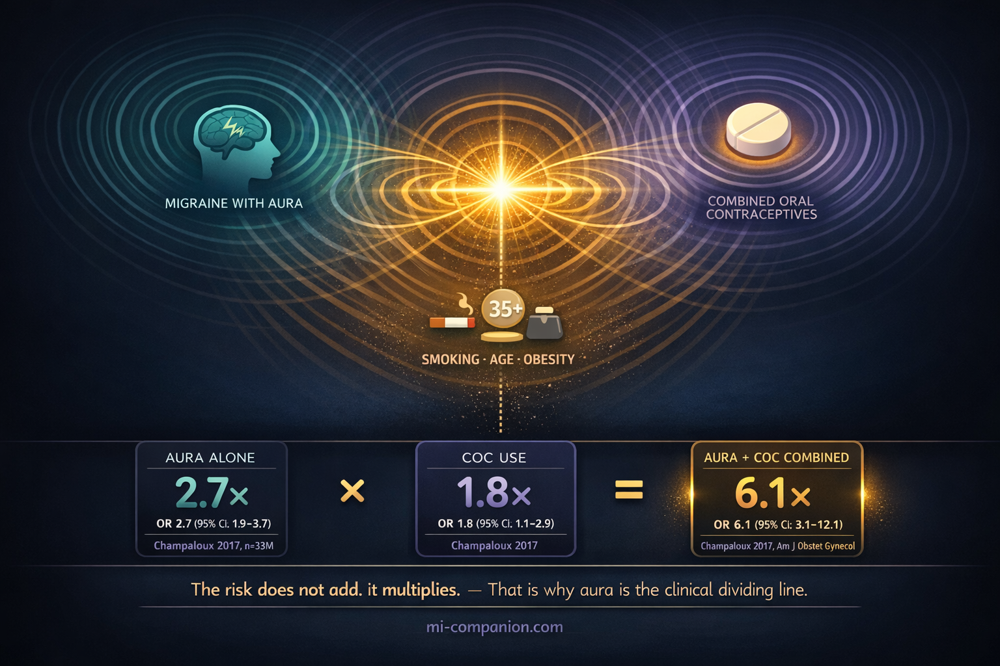
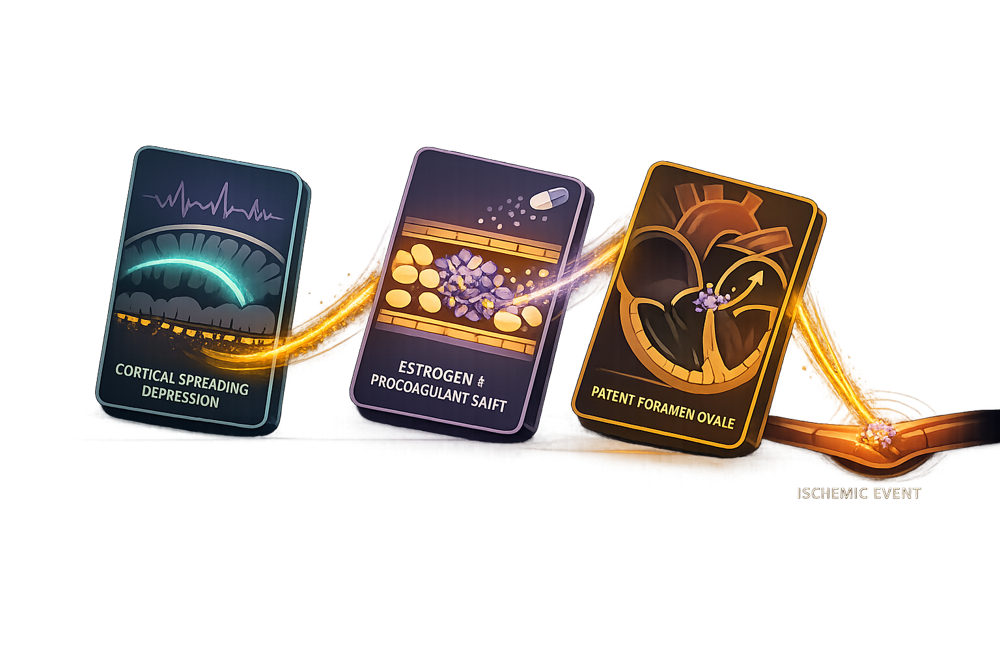

By Rustam Iuldashov
30 years lived experience with chronic migraine | Sources: 23 peer-reviewed references including Stroke (n=1,711,757), American Journal of Obstetrics and Gynecology (n=33,218,977), The Journal of Headache and Pain | Last updated: March 28, 2026
Medical Review: This content is based on peer-reviewed research from Stroke, American Journal of Obstetrics and Gynecology, The Journal of Headache and Pain, Hematology ASH Education Program, Annals of Neurology, Nature Reviews Neurology, Cephalalgia, and Cleveland Clinic Journal of Medicine.
Important Notice: This article is for informational purposes only and does not replace professional medical advice. The author is not a licensed physician or healthcare professional. Always consult your doctor before making any changes to your contraceptive method or treatment plan.
Key Takeaways
- Combined oral contraceptives multiply stroke risk approximately sixfold in women with migraine with aura — far more than either factor alone.[1]
- Cortical spreading depression during aura disrupts blood vessels and promotes clotting; synthetic estrogen amplifies this volatile state.[3][5]
- The 2024 U.S. CDC guidelines classify combined hormonal contraceptives in migraine with aura as Category 4 — the highest restriction: do not use.[14]
- Progestin-only methods (pills, IUDs, implants) carry no increased stroke risk and remain safe, effective alternatives.[9][10]
- The distinction between migraine with and without aura is the clinical dividing line. Make sure your doctors know which type you have.[1][14]
- Smoking combined with aura and hormonal contraceptives multiplies risk even further. Quitting is a targeted intervention.[15]
She is 28. She sits in her gynecologist’s office and mentions headaches. The doctor nods, writes a prescription for combined oral contraceptives, moves on. No one asks whether she sees zigzag lines before her migraines. No one mentions the word “aura.” No one tells her that the pill she is about to swallow could multiply her risk of stroke sixfold.[1]
This is not a rare scenario. About 15 percent of reproductive-aged women diagnosed with migraine with aura still receive prescriptions for combined oral contraceptives — despite guidelines that classify this combination as an unacceptable health risk.[2] The gap between what the science says and what happens in exam rooms is not a crack. It is a canyon.
The Brain’s Electrical Storm
To understand why aura changes everything, you need to understand what it does to your brain.
Those shimmering zigzag lines, expanding blind spots, tingling fingers, or sudden difficulty finding words — migraine aura is caused by a phenomenon called cortical spreading depression. Picture a slow-motion wave rolling across the surface of the brain. First comes a surge of electrical hyperactivity. Then, like the silence after a thunderclap, a wave of suppressed function follows, creeping at roughly 3 to 5 millimeters per minute.[3] [4]
The visual fireworks are only part of the story. That wave temporarily breaches the blood-brain barrier, triggers inflammatory cascades, and disrupts how blood vessels in the brain respond. In healthy tissue, this is briefly dramatic but usually harmless. Yet cortical spreading depression also damages the endothelium — the delicate inner lining of blood vessels — shifting the blood toward a clotting-prone state.[5]
Now add synthetic estrogen to this already volatile environment. You are not just adding risk. You are lighting a match near a gas leak.
The Numbers That Should Change the Conversation
The landmark 2017 Champaloux study, drawing from a database of over 33 million women, laid out the stakes plainly. Compared to women with neither migraine nor contraceptive use, the odds ratio for ischemic stroke among women with migraine with aura who used combined hormonal contraceptives was 6.1.[1] Six times the baseline risk.
Break it apart and the math is sobering. Migraine with aura alone — no contraceptives — raises stroke risk to 2.7 times baseline.[1] Combined hormonal contraceptives alone raise it to about 1.8 times.[6] But combine them, and the risk does not simply add. It multiplies.
The stroke equation: Migraine with aura (OR 2.7) × combined hormonal contraceptives (OR 1.8) = combined risk OR 6.1 (95% CI: 3.1–12.1). The risk does not add. It multiplies.[1]
This amplification was specific to aura. Among women with migraine without aura, combined hormonal contraceptive use did not substantially increase stroke risk beyond what migraine itself conferred.[1] The distinction between aura and no aura is not academic. It is the clinical dividing line between acceptable and unacceptable risk.
Recent evidence deepens the concern. A Danish registry study covering 1.7 million women over 17 years confirmed that combined hormonal contraceptives increased ischemic stroke risk by 1.77-fold overall — and found no meaningful difference between pills containing 20 versus 30–40 micrograms of ethinylestradiol.[6] Lowering the dose has not solved the problem.
At the European Stroke Organisation Conference in 2025, a multi-center study of young women showed that combined oral contraceptives tripled the risk of cryptogenic stroke. Among those stroke patients, migraine with aura carried an independent odds ratio of 5.19.[7] Even after accounting for smoking, obesity, and age, the association held firm.

Why Estrogen Is the Culprit
The problem in combined oral contraceptives is estrogen — specifically, synthetic ethinylestradiol.
Estrogen affects the cardiovascular system in ways that are both protective and dangerous, depending on context. In young, healthy women, it generally supports vascular health. But exogenous synthetic estrogen reshapes the clotting system: it increases procoagulant factors, reduces natural anticoagulants like protein S, and promotes resistance to activated protein C.[8] In plain language, it tips the balance toward clot formation.
For a brain already enduring the vascular disruption of cortical spreading depression — with compromised endothelium, leaky blood-brain barrier, and inflammatory surges — this tilt can be catastrophic.
And the hope that lower-dose pills would fix the problem has not materialized. The Danish data showed that ischemic stroke risk was similar whether the pill contained 30–40 or 20 micrograms of ethinylestradiol.[6] Some risk persists at every dose.
Progestin-only contraceptives tell a different story entirely. No meta-analysis has linked progestin-only pills, implants, or levonorgestrel-releasing IUDs to increased stroke risk.[9] The Danish cohort data even suggest that levonorgestrel IUDs may carry a slightly reduced stroke risk, though the mechanism remains unclear.[10]
The Third Domino: A Hole in the Heart
There is a piece of this puzzle most patients never hear about: patent foramen ovale, or PFO.
Before you were born, a small opening between the upper chambers of your heart allowed blood to bypass your still-developing lungs. In most people, this opening seals shut after birth. In about one in four adults, it stays open.[11]
In people with migraine with aura, the prevalence of PFO is dramatically higher — roughly 50 percent.[11] Among patients who have both cryptogenic stroke and migraine with frequent aura, PFO prevalence climbs to a staggering 93 percent.[12]
The mechanism is elegant and alarming. A PFO allows tiny blood clots that would normally be filtered by the lungs to bypass that filter entirely and travel straight to the brain. In a brain already primed by cortical spreading depression, and a bloodstream nudged toward clotting by synthetic estrogen, a PFO is the third domino in a chain of collapse.[12] [13]
Animal research has shown that microemboli passing through a PFO can themselves trigger cortical spreading depression — creating a self-reinforcing loop between heart and brain.[13]
This does not mean every woman with migraine with aura should be screened for PFO. But it illuminates a crucial truth: the stroke risk in this population is driven by multiple converging mechanisms. It is not one thing going wrong. It is several things conspiring.

What the Guidelines Actually Say
The science has spoken clearly enough that every major medical body has taken a position.
The 2024 U.S. Medical Eligibility Criteria for Contraceptive Use classifies combined hormonal contraceptives in women with migraine with aura as Category 4 — an unacceptable health risk.[14] This is the CDC’s highest restriction level. It means: do not use this method.
The European Headache Federation and European Society of Contraception issued a joint consensus recommending that women who develop new migraine with aura while on combined hormonal contraceptives should switch to non-hormonal methods or progestin-only options.[15]
For women with migraine without aura, combined hormonal contraceptives carry a Category 2 rating — meaning benefits generally outweigh risks.[14] Once again: aura is the line that divides safety from danger.
The Debate That Will Not Die
Despite the consensus, a legitimate counter-argument exists — and it deserves a hearing.
Most foundational studies are case-control designs from the 1990s and 2000s, when estrogen doses were higher. Many did not adequately distinguish between migraine subtypes. Sample sizes for the critical subgroup — women with migraine with aura using modern low-dose pills — remain limited.[16]
A Cleveland Clinic study examining over 200,000 women found very few confirmed strokes among women with migraine with aura who used combined hormonal contraceptives over a decade.[17] The absolute risk remains small. At baseline, ischemic stroke strikes roughly 11 out of every 100,000 reproductive-aged women per year.[1] Even multiplied sixfold, that number stays mathematically rare. Some researchers argue that blanket restrictions deny effective contraception to women who genuinely need it — and that rarity should counsel perspective, not prohibition.
But rarity is not the right lens here. The question is not how often it happens. The question is how easily it could be prevented. Stroke in a 28-year-old is not a statistic. It is brain damage — sudden, permanent, life-altering. And when equally effective contraceptive options exist that carry no stroke risk at all, a preventable catastrophe — however rare — becomes an indefensible one.
And there is a bitter irony in the pregnancy argument. The risk of stroke from an unintended pregnancy — including preeclampsia, eclampsia, and peripartum complications — is higher than the risk from any contraceptive method.[18] Deny a woman effective contraception in the name of stroke prevention, and you may paradoxically increase her overall stroke risk.
The answer is not to ignore the guidelines. It is to ensure women have full access to the alternatives that are both effective and safe.
What You Can Actually Do
This is not a conversation for panic. It is a conversation for clarity.
Know Your Migraine Type
This is the single most important step. The classic visual aura — zigzag lines, shimmering crescents, blind spots that expand over 5 to 60 minutes — is the most recognized form. But aura can also be sensory (a tingling wave that spreads across your hand and up your arm), speech-based (difficulty finding words mid-sentence), or rarely, motor (temporary one-sided weakness). If you are unsure, describe your pre-headache symptoms to a neurologist. Precision here is not pedantic. It is protective.[19]
Make Your Specialists Talk to Each Other
Gynecologists and neurologists often treat the same woman in separate silos. Your gynecologist needs to know your migraine type. Your neurologist needs to know your contraceptive method. If they have not communicated, you may need to be the bridge between them.
Know Your Alternatives
Progestin-only pills, the levonorgestrel IUD, the etonogestrel implant, and the copper IUD are all considered safe for women with migraine with aura.[14] The levonorgestrel IUD carries no increased stroke risk and may even be protective.[10] These are not consolation prizes. They are excellent contraceptives.
Attack Your Other Risk Factors
Smoking is a devastating multiplier. One study documented a sevenfold increase in stroke risk among women with migraine with aura who smoked and used hormonal contraceptives.[15] If you have aura, quitting smoking is not generic health advice. It is a targeted stroke-prevention strategy.
Watch for New Symptoms
If you develop new aura episodes while taking combined hormonal contraceptives — visual disturbances, numbness, speech difficulties that you have never experienced before — stop and contact your doctor immediately. New-onset migraine with aura while on the pill demands a contraceptive switch, not monitoring.[15]
⚠️ When to Seek Emergency Help
If you experience a migraine aura that lasts longer than 60 minutes, differs from your usual pattern, includes weakness on one side of your body, or comes with signs of stroke — sudden severe headache, confusion, vision loss, slurred speech, facial drooping — call emergency services immediately.
A prolonged or atypical aura can be indistinguishable from a stroke. Only medical evaluation can tell the difference. Do not use this article to self-diagnose.
⚕️ Important Medical Disclaimer
This article is for informational and educational purposes only and does not constitute medical advice, diagnosis, or treatment. The author, Rustam Iuldashov, is not a licensed physician, neurologist, or healthcare professional. He is a patient advocate with 30 years of personal experience living with chronic migraine.
All clinical claims in this article are sourced from peer-reviewed research published in indexed medical journals. Study designs and sample sizes are noted where applicable.
Always consult a qualified healthcare provider for questions about your individual health, migraine treatment, contraceptive choices, or medication decisions. Hormonal contraceptive decisions should be made in partnership with your gynecologist and neurologist, taking into account your full medical history, migraine subtype, and personal risk factors.
People with migraine with aura carry an elevated risk of ischemic stroke. If you experience sudden cognitive changes, speech difficulty, vision loss, or one-sided weakness, seek emergency medical attention immediately. This content was last reviewed for accuracy on March 28, 2026.
References
- Champaloux SW, Tepper NK, Monsour M, et al. “Use of combined hormonal contraceptives among women with migraines and risk of ischemic stroke.” Am J Obstet Gynecol, 216(5):489.e1-7 (2017). doi:10.1016/j.ajog.2016.12.019. Study design: Nested case-control. n=25,887 stroke cases among 33,218,977 women.
- Gibbs L, Jick S, et al. “Oral contraceptive use among people with migraines remains high, despite stroke risk.” Pharmacoepidemiol Drug Saf (2025). Study design: Cohort study. n=large claims database (UK CPRD).
- Lauritzen M, Dreier JP, Fabricius M, et al. “Clinical relevance of cortical spreading depression in neurological disorders.” J Cereb Blood Flow Metab, 31:17–35 (2011). doi:10.1038/jcbfm.2010.191. Study design: Review.
- Charles AC, Baca SM. “Cortical spreading depression and migraine.” Nat Rev Neurol, 9:637–644 (2013). doi:10.1038/nrneurol.2013.192. Study design: Review.
- Khalid O, et al. “Migrainous infarction and cortical spreading depression.” Acta Sci Malaysia, 4(1):9–15 (2020). doi:10.26480/asm.01.2020.09.15. Study design: Review.
- Letnar G, Andersen KK, Olsen TS. “Ischemic stroke in users of combined hormonal contraceptives: a Danish registry study.” Stroke, 56(2):276–284 (2025). doi:10.1161/STROKEAHA.124.049252. Study design: Cohort study. n=1,711,757 women; 14,697,788 person-years.
- Sezgin M, Sarkanen T, von Sarnowski B, et al. “Hormonal contraception increases the risk of cryptogenic stroke in young women.” Abstract O049, European Stroke Organisation Conference, May 21, 2025, Vienna, Austria. Study design: Case-control (SECRETO). n=268 cases + 268 controls.
- Skeith L, Bates SM. “Estrogen, progestin, and beyond: thrombotic risk and contraceptive choices.” Hematology ASH Educ Program, 2024(1):644–651 (2024). doi:10.1182/hematology.2024000591. Study design: Review.
- Etminan M, Takkouche B, Isorna FC, Samii A. “Risk of ischemic stroke in people with migraine: systematic review and meta-analysis.” BMJ, 330:63 (2005). doi:10.1136/bmj.38302.504063.8F. Study design: Meta-analysis. n=13 studies pooled.
- Letnar G, Andersen KK, Olsen TS. “Risk of stroke in women using levonorgestrel-releasing intrauterine device for contraception.” Stroke, 55(12):2953–2960 (2024). doi:10.1161/STROKEAHA.124.047438. Study design: Cohort study. n=Danish nationwide cohort 2004–2021.
- Domitrz I, Mieszkowski J, Kwieciński H. “Prevalence of patent foramen ovale in migraine patients with and without aura compared with stroke patients.” Neurol Neurochir Pol, 38(2):89–92 (2004). Study design: Cross-sectional. n=141 migraine patients + 330 stroke patients.
- West BH, Noureddin N, Mamzhi Y, et al. “Frequency of patent foramen ovale and migraine in patients with cryptogenic stroke.” Stroke, 49(5):1123–1128 (2018). doi:10.1161/STROKEAHA.117.020160. Study design: Cross-sectional. n=712 ischemic stroke patients.
- Nozari A, Dilekoz E, Sukhotinsky I, et al. “Microemboli may link spreading depression, migraine aura, and patent foramen ovale.” Ann Neurol, 67(2):221–229 (2010). doi:10.1002/ana.21871. Study design: Experimental (animal model).
- Nguyen AT, Curtis KM, Tepper NK, et al. “U.S. Medical Eligibility Criteria for Contraceptive Use, 2024.” MMWR Recomm Rep, 73(RR-4):1–126 (2024). Study design: Clinical guideline.
- Sacco S, Merki-Feld GS, Ægidius KL, et al. “Hormonal contraceptives and risk of ischemic stroke in women with migraine: a consensus statement from the EHF and ESC.” J Headache Pain, 18:108 (2017). doi:10.1186/s10194-017-0815-1. Study design: Consensus/Systematic review.
- Batur P, et al. “Combined hormonal contraceptives and migraine: an update on the evidence.” Cleve Clin J Med, 84(8):631–638 (2017). doi:10.3949/ccjm.84a.16033. Study design: Review.
- Batur P, et al. Cleveland Clinic study of women with migraine and CHC use, 2010–2020. Cited in American Migraine Foundation resource (2023). Study design: Retrospective cohort. n=200,000+ women.
- Maas AHEM, et al. “Oral contraceptives and ischemic stroke risk.” Stroke, 48 (2017). doi:10.1161/STROKEAHA.117.020084. Study design: Review/analysis.
- Headache Classification Committee of the IHS. “The International Classification of Headache Disorders, 3rd edition.” Cephalalgia, 38(1):1–211 (2018). doi:10.1177/0333102417738202. Study design: Classification/guideline.
- Kurth T, Schürks M, Logroscino G, et al. “Migraine, vascular risk, and cardiovascular events in women: prospective cohort study.” BMJ, 337:a636 (2008). doi:10.1136/bmj.a636. Study design: Prospective cohort (Women’s Health Study). n=27,798 women.
- Marchione P, Ghiotto N, Sances G, et al. “Clinical implications of patent foramen ovale in migraine with aura.” Funct Neurol, 23(4):201–205 (2008). Study design: Cross-sectional. n=65 patients.
- Tepper NK, Whiteman MK, Marchbanks PA, et al. “Safety of hormonal contraceptives among women with migraine: a systematic review.” Contraception, 94(6):630–640 (2016). doi:10.1016/j.contraception.2016.04.016. Study design: Systematic review. n=6 studies included.
- Ayata C, Lauritzen M. “Spreading depression, spreading depolarizations, and the cerebral vasculature.” Physiol Rev, 95:953–993 (2015). doi:10.1152/physrev.00027.2014. Study design: Review.

How We Create Content
- Peer-reviewed sources only. Stroke, American Journal of Obstetrics and Gynecology, The Journal of Headache and Pain, Hematology ASH Education Program, Annals of Neurology, Nature Reviews Neurology, Cephalalgia, Cleveland Clinic Journal of Medicine, Contraception, BMJ, Physiological Reviews.
- Study transparency. Study design and sample sizes noted for all clinical references.
- Source verification. All claims backed by numbered references with DOI links.
- Experience + Science. 30 years personal migraine experience combined with peer-reviewed evidence.
- Regular updates. Articles reviewed when significant new research emerges.
- No conflicts of interest. No funding from any pharmaceutical, contraceptive, or supplement company referenced in this article.
Know Your Migraine Type. Protect Your Choices.
Migraine Companion helps you track aura patterns, attack frequency, and triggers — building the data your neurologist and gynecologist need to make safe, informed contraceptive decisions together.
Last reviewed: March 2026
Next scheduled review: September 2026